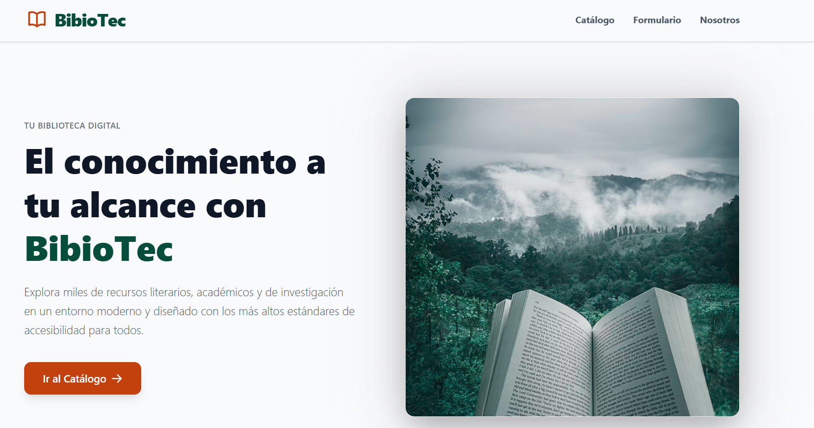

Seventh-semester Software Engineering student at the National Polytechnic School, Quito - Ecuador, focused on web and mobile application development.
BibioTec — Accessible Digital Library
2026

Description
Team project for a digital library web platform (BibioTec) built with a strong focus on usability and
accessibility. Implemented semantic HTML5, WAI-ARIA and keyboard-first navigation, reaching partial
WCAG 2.2 AA conformance (38 of 55 applicable success criteria). Testing combined automated tools
(WAVE, axe DevTools, Pa11y) with manual audits, screen reader checks (NVDA), color-contrast validation,
and reflow testing at 400% zoom.
Web-based recipe management system built with Jakarta EE and deployed on Apache Tomcat 10.
Uses Servlets, JSP and JSTL for the frontend and JPA (EclipseLink) for persistence with MySQL.
Enterprise architecture following Java EE standards for maintainability and scalability.
Knockout is a 2D fighting game where players face off in 1v1 combat across different scenarios.
Built for the Software Engineering and Requirements course. Made in Unity and programmed in C#.
Academic grade prediction API using a neural network trained with TensorFlow 2.15.0.
Deployed on Render with subdomain permission management. Interactive web interface that consumes the
API to predict grades based on student input data.
PoliEats is a management system for the National Polytechnic School's restaurant. Uses data structures
(doubly linked lists, queues, and binary search trees) to optimize orders, inventory, and reservations,
applying Data Structures and Algorithms concepts.
Fingerprint reader system integrated with a database for user registration and verification.
Implemented on an electronic lock, providing secure access control through electronic components
and C programming with Arduino Uno.
Clone of the classic Bad Ice Cream game built in Java with OOP. Includes multiple custom,
polytechnic-themed levels where you collect fruit, break and create ice, and avoid monsters.
Final project for Programming II applying the object-oriented paradigm.
Final project for Programming I at EPN. Implements the classic hangman game in C++ using the
rlutil library for the console interface. My first language and first complete project.
Recommended to compile and run in Visual Studio 2022.
Library management system built in C++. Allows renting and returning books, searching the database,
adding new titles, and managing inventory. Includes a login system and a console-based graphical
interface using the rlutil library.